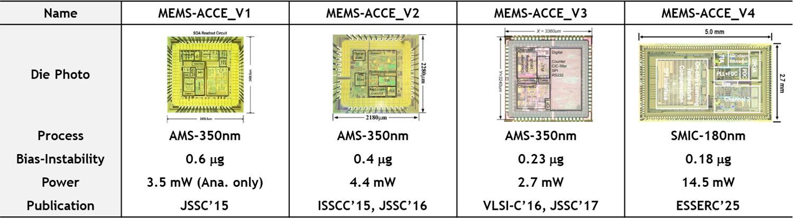
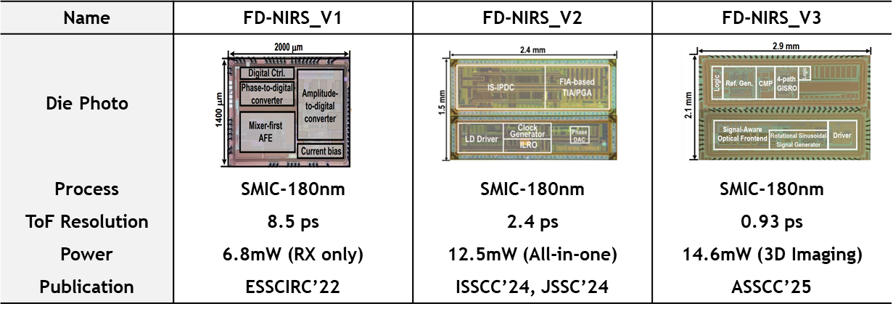
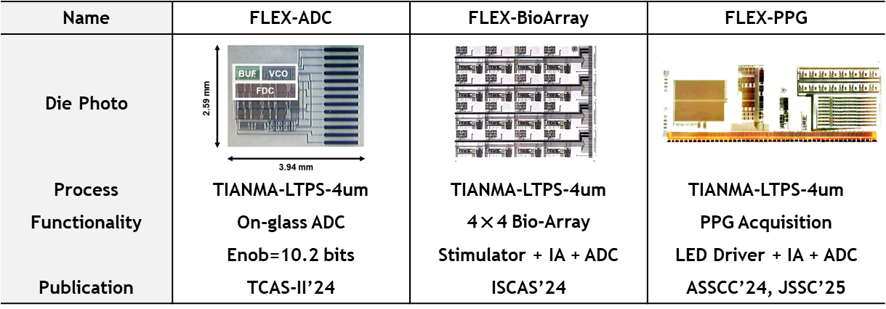

NSFC RFIS Award
Our postdoctoral fellow Flury Eva GUTTMANN received support from the NSFC Research Fund for International Scientists.
|
Shanghai Jiao Tong University Circuits that connect silicon, senses, and life.Jian Zhao Research Group develops mixed-signal integrated circuits and sensor interfaces for inertial sensing, optical brain–computer interfaces, flexible electronics, and biomedical systems.    Group updates Latest NewsNSFC RFIS AwardOur postdoctoral fellow Flury Eva GUTTMANN received support from the NSFC Research Fund for International Scientists. JMEMS Paper AcceptedWork on a MEMS accelerometer system by Yang Bo was accepted by the Journal of Microelectromechanical Systems. A-SSCC 2026MEMS accelerometer chip work by Benhao Huang and Yang Bo was accepted at A-SSCC 2026. |